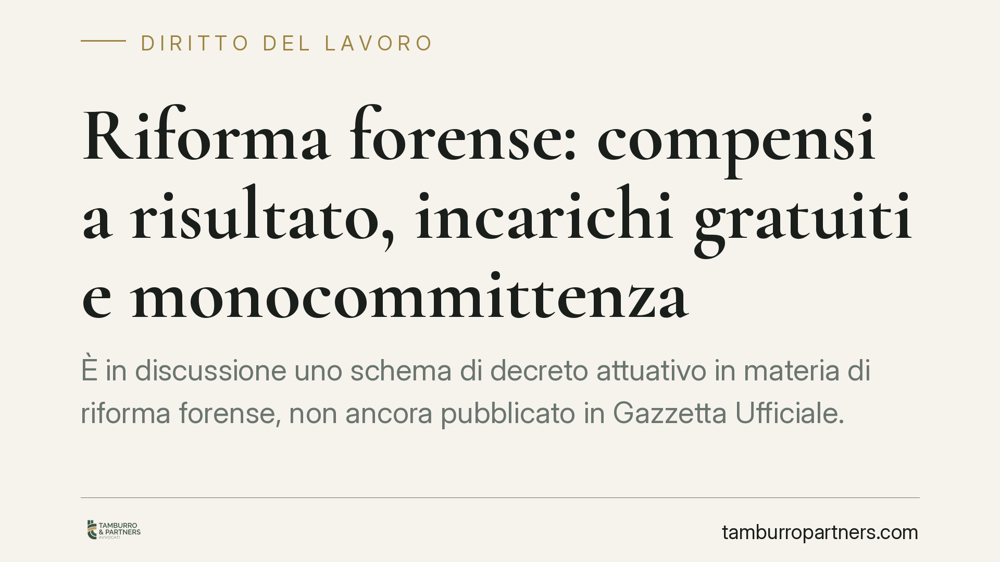

Riforma forense: compensi a risultato, incarichi gratuiti e monocommittenza
È in discussione uno schema di decreto attuativo in materia di riforma forense, non ancora pubblicato in Gazzetta Ufficiale. Le anticipazioni parlano di compensi parametrati al risultato, incarichi gratuiti, monocommittenza e nuovo tirocinio. Il tema è delicato perché incrocia il divieto di patto di quota lite e la disciplina dell'equo compenso. Vediamo cosa è certo oggi e cosa resta ipotesi.

Di cosa si parla
Nelle scorse settimane sono circolate anticipazioni su uno schema di decreto attuativo in materia di riforma forense, allo studio del Governo e non ancora pubblicato in Gazzetta Ufficiale. I contenuti riportati riguardano quattro assi: compensi parametrati al risultato, possibilità di incarichi gratuiti, inquadramento della cosiddetta monocommittenza del professionista autonomo e una revisione del tirocinio.
Una premessa di metodo è doverosa. Finché il testo non è approvato in via definitiva e pubblicato, non esiste una norma vigente con numero e articoli citabili come dato certo. Quanto segue, quindi, non commenta disposizioni in vigore, ma colloca le ipotesi nel quadro normativo attuale, che resta il parametro di riferimento.
Inquadramento normativo
L'ordinamento forense è oggi retto dalla Legge 31 dicembre 2012, n. 247. Due regole vanno tenute distinte, perché l'approssimazione genera equivoci.
La prima è il divieto di patto di quota lite. L'art. 13, comma 4, L. 247/2012 vieta i patti con cui l'avvocato percepisce come compenso, in tutto o in parte, una quota del bene oggetto della prestazione o della ragione litigiosa. È un divieto specifico: ciò che è precluso è fare proprio una porzione del risultato patrimoniale della lite.
Altra cosa è il compenso parametrato al risultato inteso come premio ulteriore (il cosiddetto palmario) o come pattuizione che leghi parte dell'onorario all'esito, purché determinato in misura proporzionata all'attività e all'opera prestata, non come quota del bene. Il confine tra le due figure è sottile ma giuridicamente netto, ed è su questo crinale che si giocherà la lettura di qualunque nuova disposizione.
Su entrambe incide la disciplina dell'equo compenso: la Legge 21 aprile 2023, n. 49 ha introdotto una tutela generale per i professionisti, estendendone il perimetro rispetto all'art. 13-bis L. 247/2012. La 49/2023 presume non equo il compenso unilateralmente determinato da committenti qualificati — in sintesi imprese bancarie e assicurative, grandi imprese e pubbliche amministrazioni — e colpisce con nullità le clausole che fissano compensi inferiori ai parametri ministeriali. Qualunque apertura a incarichi gratuiti o a compensi a risultato dovrà quindi fare i conti con questa cornice di protezione.
Implicazioni pratiche per l'avvocato
Per il professionista le ricadute, se le ipotesi fossero confermate, riguarderebbero la redazione del mandato e del preventivo. Un compenso legato all'esito impone clausole precise sulla base di calcolo, sui presupposti di maturazione e sulla compatibilità con il divieto di quota lite.
Il tema degli incarichi gratuiti va letto con prudenza: la rinuncia al compenso è possibile, ma non deve tradursi in uno strumento per aggirare l'equo compenso nei rapporti con committenti qualificati, dove la tutela ha natura inderogabile.
Sulla monocommittenza del professionista autonomo, l'attenzione si sposta sui criteri che distinguono il lavoro genuinamente autonomo dalle collaborazioni etero-organizzate. Il riferimento concettuale resta l'art. 2 del D.Lgs. 81/2015, che attrae alla disciplina del lavoro subordinato le prestazioni organizzate dal committente anche quanto a tempi e luogo. Chi struttura un rapporto stabile con un unico committente deve poter documentare la propria autonomia organizzativa.
Cosa fare in concreto
- Verificare periodicamente lo stato dell'iter: fino alla pubblicazione in Gazzetta Ufficiale nessun contenuto dello schema è norma vigente.
- Rivedere i modelli di mandato distinguendo con chiarezza compenso a risultato, palmario e quota lite, evitando clausole che attribuiscano una quota del bene conteso.
- Nei rapporti con committenti qualificati ai sensi della L. 49/2023, controllare la conformità ai parametri ministeriali e la tenuta delle clausole sul compenso.
- Documentare l'autonomia organizzativa nei rapporti di monocommittenza, conservando evidenze su sede, orari e gestione dell'incarico.
- In caso di dubbio su una pattuizione, richiedere una verifica puntuale prima della sottoscrizione, non dopo.
Un punto fermo
Qualunque sarà l'esito dell'iter, la verifica di tenuta rispetto all'equo compenso resterà centrale. Compensi a risultato e incarichi gratuiti non potranno diventare un canale per comprimere le tutele che la L. 49/2023 ha reso inderogabili per i committenti qualificati.
---
*Contributo informativo a cura di Tamburro & Partners - Avv. Giuseppe Tamburro. Non costituisce parere legale.*
Ogni storia di lavoro ha i suoi tempi.
Se gestisci HR e vuoi un confronto su contenzioso, ispezioni o licenziamenti, scrivi allo studio. Ti rispondiamo entro un giorno lavorativo.